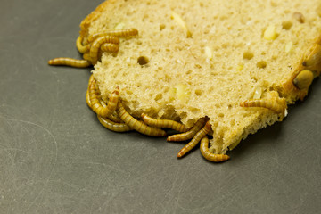

Recipies of Middle Earth

Uruk-Hai Grub
What you'll need
- 2 Cups of flour
- 3/4 Cups of water
- 1 1/2 Teaspoons of salt
Instructions
- Preheat oven to 375 F
- Mix the flour, water and salt together in a large
bowl.
- Use a roller to flatten the dough out to a
thickness of 1/2 inch
- Cut dough into 3 inch squares and place on a
baking sheet
- Put baking sheet in the oven for half an hour. Then
flip the individual pieces and cook for another half hour.
- Once cooked have a troop of sweatty Uruk-Hai carry
the bread for one month through the mountians.
It's not the tastiest nor the healthiest bread you can make,
but it will hold you over until meat is back on the menu
for you and your boys.